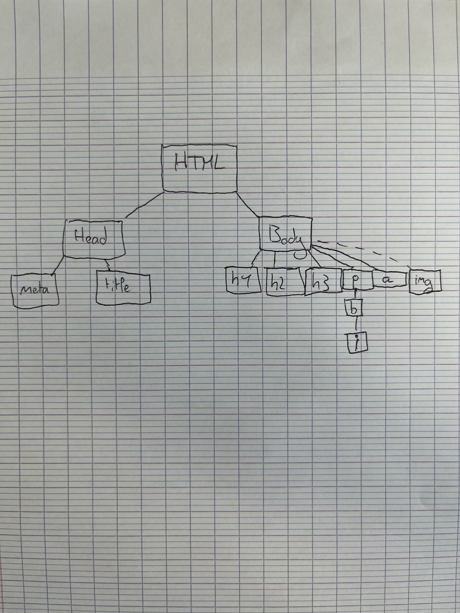
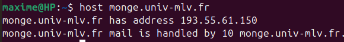
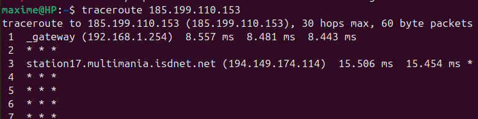
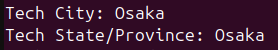
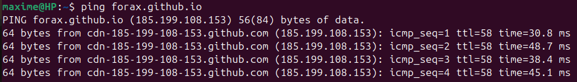
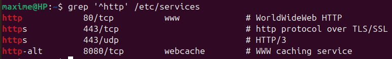
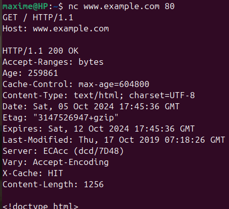
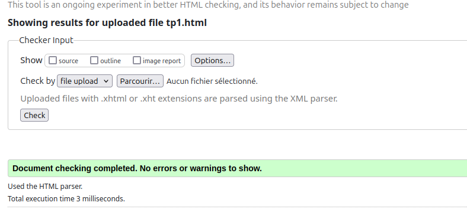

Compte Rendu de TP1
| Maxime Prévot | ||
| ESIPE INFO 1 | ||
| TP 1 de Programmation Web | ||
Exercice 1
Copié-collé du code
Pour afficher les caractères spéciaux il faut ajouter la balise meta avec l'attribut charset="UTF-8" ce qui va changer l'encodage en UTF-8
-
Q2) A quoi servent les tags h1, h2 et h3 ?
h1, h2, ... , h6 dont des balises qui permettent d'afficher des titres.
-
Q3) A quoi sert le tag p ?
Le tag p sert à insérer un paragraphe, plus simplement,afficher du texte.
-
Q4) Ajout d'une phrase
Les tags HTML commencent par une balise ouvrante <foo> et finissent par une balise fermante </foo>
-
Q5) Comment mettre en gras ou en italique ?
Pour mettre en gras on peut mettre le terme que l'on veut mettre entre la balise <b> et </b>
-
Q6) Et comment faire pour mettre un mot à la fois en gras et en italique ?
Pour mettre notre mot souhaité en gras et en italique il suffit de le mettre entre les balises <b><i> et </b></i>
On peut aussi utiliser du CSS avec font-weight et font-style
-
Q7) On souhaite que le titre de la fenêtre du navigateur soit "Compte Rendu de TP1", comment faire ?
Il suffit de mettre que l'on souhaite entre les balises <title> et </title> elles mêmes comprisent dans les balises <head> et </head>
-
Q8) Ajoutez un lien (le tag A) vers le cours avec comme titre cours de programmation web.
Cours de programmation web Q9) Dessin arbre HTML
-
Q10)

Exercice 2
-
Q1)
Le nom de la machine correspond au sous-domaine "monge",et le nom de domaine est "univ-mlv.fr"
-
Q2)
Première ligne de réponse : monge.univ-mlv.fr has address 193.55.61.150
Deuxième ligne : monge.univ-mlv.fr mail is handled by 10 monge.univ-mlv.fr.
 -
Q3)
Cela marche toujours, si l'on remplace les adresses ip par des noms de domaines c'est parce que les humains ne pourraient pas retenir toutes les adresses ip disponibles sur le web. Il est plus facile pour des humains de mémoriser des noms.
-
Q4)
Adresse ip site Forax : 185.199.110.153
On tombe sur une page avec une erreur 404 car le serveur ne reçoit pas d'indication sur le site spécifique que l'on souhaite consulter, ce qui peut le perdre car il ne peut pas savoir quel contenu il doit afficher.
-
Q5)
La commande traceroute permet de suivre le chemin emprunté par les paquets vers l'adresse ip de destination
le nom du 1er routeur de sortie que l'on rencontre est : fwint1infpedago.univ-eiffel.fr
Le réseau sur lequel est connecté l'université est : fwext1.univ-eiffel.fr
Les autres réseaux traversés sont les réseaux RENATER et GEANT
(La réponse sur cette image n'est pas celle attendue puisque je l'ai executé à partir de mon réseau wifi personnel, néanmoins les réponses ci-dessus proviennent du réseau de l'école )
-
Q6)
Le nom de la machine hébérgeant le site web est : root.mai-ko.link > www.mai-ko.com
Le nom de domaine du site est root.mai-ko.com
En faisant : whois mai-ko.com dans le terminal, j'ai pu voir que le Tech State/Province de ce site est à Osaka
La commande ping m'indique que j'arrive à envoyer un paquet chez root.mai-ko.link mais qu'aucun paquet n'a été reçu en retour. Cependant, lorsque je ping google.com j'obtiens bien un paquet en retour avec un ttl et un temps de retour indiqué.
Lorsque je ping forax.github.io, j'obtiens un ttl de 58 et un temps de réponse moyen par paquet de 40.0ms, ce qui me semble très peu (très rapide)
Je peux en déduire que le serveur sur lequel est stocké le site forax.github.io est plus proche de moi (en terme de réseau) et qu'il passe par moins de routeurs (Il y a moins de "hop")
Il est possible que mai-ko bloque ma requête ping (procédure qui permet d'éviter les spams pings) ou que le paquet ne soit pas retourné car son chemin de retour effectue trop de "hop" et ne parvient pas à destination.
 
Exercice 3
-
Q1)
/etc/services associe des noms de services a des ports
-
Q2)
Commande pour trouver les ports sur lesquels fonctionnent TCP et HTTP : grep '^http' /etc/services
Resultats : port HTTP/TCP > 80
 -
Q3)
Voici le header que l'on obtient :
HTTP/1.0 404 Not Found
Content-Type: text/html
Date: Fri, 04 Oct 2024 13:36:17 GMT
Server: ECAcc (dcd/7D26)
Content-Length: 345
Connection: close
<?xml version="1.0" encoding="iso-8859-1"?>
<!DOCTYPE html PUBLIC "-//W3C//DTD XHTML 1.0 Transitional//EN" "http://www.w3.org/TR/xhtml1/DTD/xhtml1-transitional.dtd">
<html xmlns="http://www.w3.org/1999/xhtml" xml:lang="en" lang="en">
<head>
<title>404 - Not Found</title>
</head>
<body>
<h1>404 - Not Found</h1>
</body>
</html>
-
Q4)
La 1ere valeur est le protocole utilisé, la 2eme est un code status sur la recherche, et la 3eme indique à quoi correspond le code status précédemment relevé.
Ici, la page n'a pas été trouvée, c'est du au protocole 0.9 de HTTP que l'on a utilisé.
-
Q5)
Content-type indique le type de contenu que l'on retrouve dans le corps de la réponse.
-
Q6)
Content-length indique la taille du corps de la réponse en octets ( != du nombre de caractère )
-
Q7)
3 premières valeurs de l'en-tête : HTTP/1.1 200 OK
Cette fois utilise le protocole 1.1 de HTTP et on réçoit un code 200 qui nous indique que la page est bien trouvée
Cette fois puisque la page à été trouvée, la taille du corps de la réponse est beaucoup plus grande que lorsque la page n'était pas trouvée.
Quant au Content-Type, on retrouve toujours le format HTML mais cette fois avec le charset UTF-8 qui correspond à l'encodage utilisé.
 -
Q8)
On doit fournir le host dans cette version de protocole HTTP puisque cela permet d'indiquer au serveur sur quel nom de domaine on veut pointer précisement.
Il y a aussi un rapport avec l'hebergement virtuel.
-
Q9)
Lorsque l'on pointe sur le domaine www.forax.org,on obtient un code 302, qui indique que la ressource est temporairement déplacée vers l'URL contenue dans l'en-tête "Location"
La valeur de Location correspond alors à la veritable URL ou est redirigé le client.
Exercice 4
-
Q2)
Ayant déjà fais de l'HTML, je savais que j'allais utiliser l'attribut colspan qui peut se mettre à la balise <table>. Pour trouver plus de précision sur cet attribut ainsi que sa balise associée, il ne suffisait plus qu'à rechercher ces termes avec un CTRL + f.
On obtient le fil d'ariane suivant : 4.9.1 the table element -> Content attribute
Pour faire ce cartouche j'ai indiqué que le nombre de colonnes était de 3 et ai joué sur les colspan pour indiquer quelle taille les cellules devaient avoir.
Ensuite avec du CSS j'ai appliqué des bordures aux cellules, notamment des bordures à pointillés en haut et en bas des lignes. Quant aux bordures droites et gauches, ce sont des pseudos-éléments qui me permettent de rajouter un rectangle noir de petite taille qui fait office de tiret (illusion)
Validation W3C